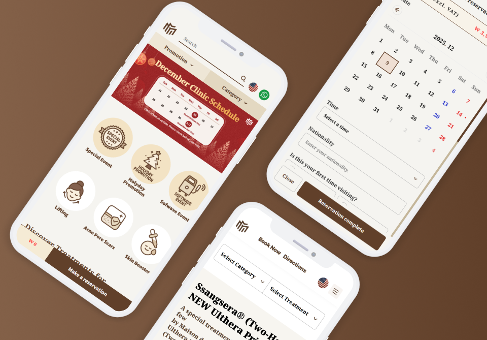

CSS 재사용
비슷한 레이아웃을 가진 페이지에는 특정 화면에만 묶이지 않는 클래스명을 사용해 스타일을 재사용합니다.
< Project Detail />

01 / DESIGN ANALYSIS & HTML
Tailwind·Bootstrap 같은 UI 라이브러리를 사용하지 않고 시안의 UI를 직접 구현했습니다. 화면을 만들기 전 반복 단위와 의미 단위로 나누고, 이후 태그와 클래스 구조를 결정했습니다.
이 부분은 시안을 보고 화면을 어떻게 1차 그룹화했는지 이미지와 함께 채워 넣으세요.
이 부분은 반복 영역과 공통 UI를 어떻게 나눴는지 이미지와 함께 채워 넣으세요.
이 부분은 그룹화한 뒤 선택한 시맨틱 태그와 일반 태그의 이유를 채워 넣으세요.
02 / STYLE & CLASS NAME
비슷한 레이아웃을 가진 페이지에는 특정 화면에만 묶이지 않는 클래스명을 사용해 스타일을 재사용합니다.
블록·요소·상태의 관계가 이름에서 읽히도록 BEM 방식으로 작성해 가독성과 계층 구조를 유지합니다.
이 부분은 재사용한 클래스 또는 BEM 네이밍 사례 이미지를 채워 넣으세요.
03 / INTERACTION & CUSTOM UI
여러 페이지에서 쓰이거나 다시 쓰일 가능성이 있는 UI는 같은 역할의 클래스명을 유지하고, 외부 JavaScript 파일에서 동작을 관리합니다.
js- 접두사를
사용해 스타일 클래스와 구분합니다.
이 부분은 여러 페이지에서 공통으로 쓴 UI와 클래스명 사례를 채워 넣으세요.
이 부분은 js- 접두사로 이벤트 대상을 구분한
사례를 채워 넣으세요.
이 부분은 이벤트 처리와 함수 로직을 분리한 JavaScript 사례를 채워 넣으세요.
04 / RESPONSIVE & ACCESSIBILITY
미디어 쿼리로 화면 구조와 요소 크기를 조정하고, 이미지 대체 텍스트와 웹 표준을 점검합니다. 크로스브라우징 과정에서 확인한 내용은 프로젝트별로 기록합니다.
이 부분은 노트북 또는 태블릿 가로 화면의 반응형 비교 이미지를 넣으세요.
이 부분은 태블릿 세로 또는 모바일 가로 화면의 반응형 비교 이미지를 넣으세요.
이 부분은 모바일 세로 화면의 반응형 비교 이미지를 넣으세요.
이 부분은 alt 텍스트·웹 표준·브라우저 확인 사례를 채워 넣으세요.
이 부분은 구현 중 발생한 문제, 원인, 해결 과정을 채워 넣으세요.
이 부분은 이후 개선하고 싶은 점이나 다음 작업에서 적용할 기준을 채워 넣으세요.
글로벌 유저를 위한 시술 예약 시스템과 콘텐츠 페이지를 구축한 프로젝트입니다. 사용자 UI/UX 디자인과 관리자 시스템의 디자인·퍼블리싱을 함께 담당했으며, 시술 상세 페이지는 반복 활용 가능한 공통 구조로 구성했습니다.